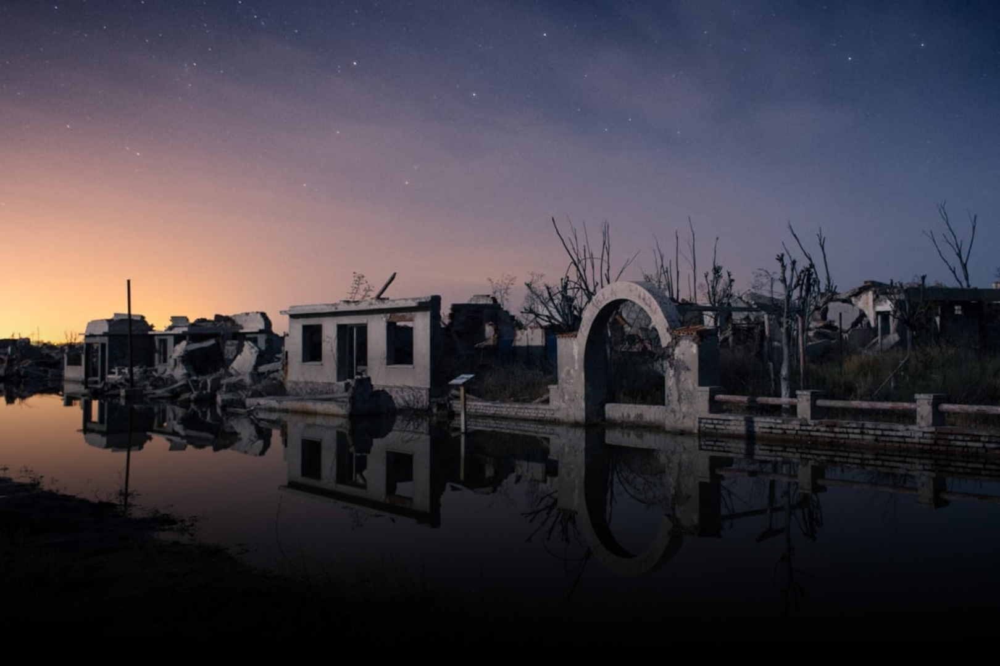
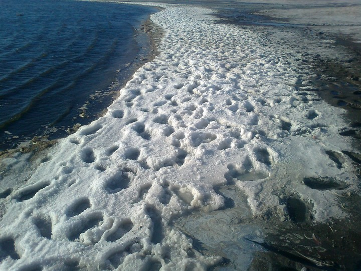
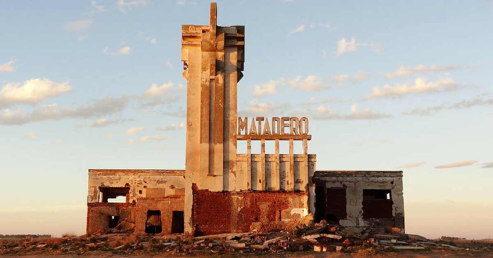
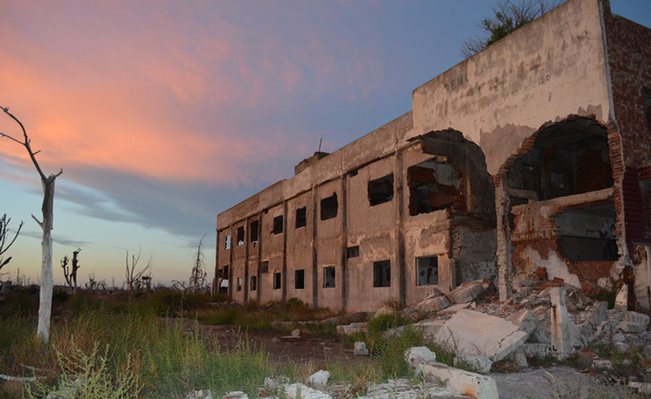
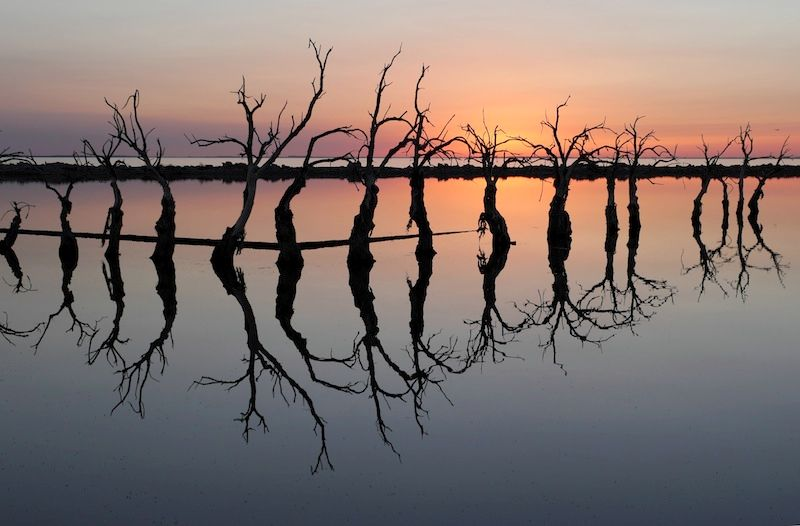
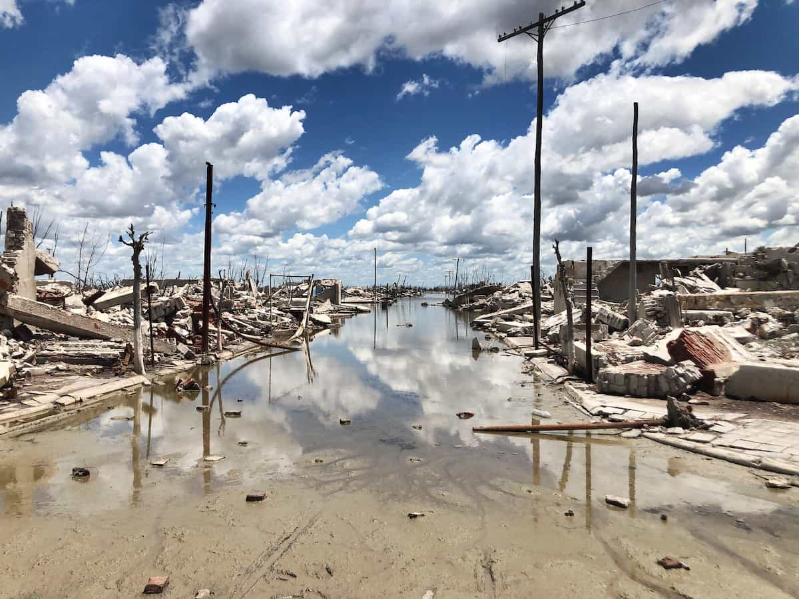

En 1985 la Villa entera quedó sepultada por el Lago Epecuén. Sus aguas saladas, diez veces más que el océano atlántico, y solo comparable con el Mar Muerto, sepultaron las casas, la municipalidad y hasta el edificio de “El Matadero”, realizado por el arquitecto Francisco Salamone.
Situada a 7,3 km de la ciudad de Carhué, fue fundada en 1921 a orillas del lago del mismo nombre, y llegó a tener cerca de 1.500 habitantes, siendo visitada por un promedio de 25 mil turistas durante el verano.
En 1985 una inundación provocada por una crecida del lago sumergió al pueblo completamente bajo el agua, obligando que se evacuara casi toda su población. Posteriormente en los últimos años el agua comenzó a retirarse, dejando a la vista las ruinas de la ciudad, que se han convertido por sí mismas en un atractivo turístico.

El espigón de Epecuén fue inaugurado en 1926.

La estación del ferrocarril de Epecuén en su esplendor, desbordada de turistas.

Durante la década de 1950 y 1970, Villa Epecuén recibía alrededor de 25 mil turistas.
La repentina destrucción de la ciudad, junto con sus ruinas, despertaron el interés de periodistas, antropólogos, fotógrafos y deportistas.12345 Después de todo, Villa Epecuén no estaba totalmente deshabitada, ya que Pablo Novak, un vecino cuya familia estaba firmemente ligada a la ciudad mediante distintos emprendimientos, se negó a abandonarla y permaneció ahí como el único habitante.
Anteriormente te mostramos fotos de lo que fue el pueblo en su maximo esplendor, aquí te dejamos fotos de cómo es en la actualidad





Si querés saber dónde dormir en Villa Epecuén tenés que buscar alojamiento en Carhué, que se encuentra a menos de 10 km de la villa. Esta opción es la más popular ya que es el pueblo más cercano y de mejor acceso si estás pensando hacer turismo en Epecuén. Te recomendamos el post ¿Qué hacer en Carhué? para averiguar más data del lugar.